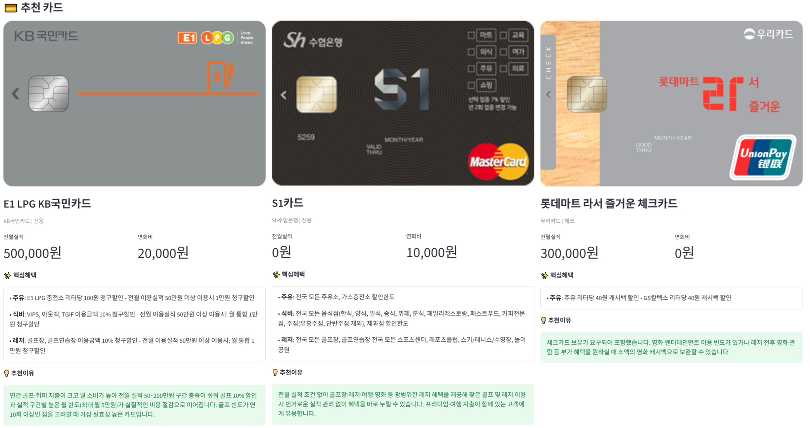
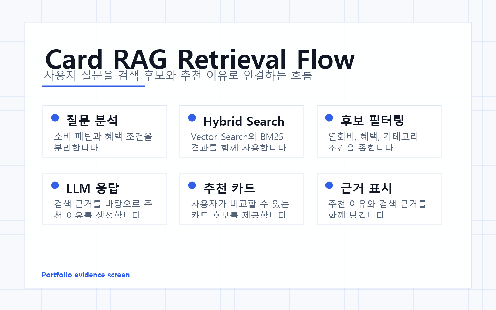
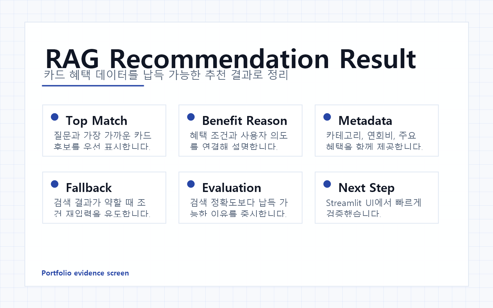

Overview
프로젝트 소개
사용자의 소비 패턴과 질문을 분석해 관련 카드 후보를 검색하고, 추천 이유를 함께 생성하는 RAG 서비스입니다.

Overview
사용자의 소비 패턴과 질문을 분석해 관련 카드 후보를 검색하고, 추천 이유를 함께 생성하는 RAG 서비스입니다.
Problem
카드 상품은 혜택 조건이 복잡해 사용자가 자신에게 맞는 카드를 직접 비교하기 어렵습니다. 검색과 생성형 AI를 결합해 납득 가능한 추천 흐름을 만들었습니다.
Flow
사용자 질문 → 소비 조건 추출 → Vector Search와 BM25 검색 → 조건 필터링 → LLM 추천 이유 생성
Troubleshooting
벡터 검색만으로는 특정 혜택 키워드가 포함된 카드를 놓치는 경우가 있었습니다.
사용자 질문의 의미 유사도와 카드 혜택의 정확한 키워드 매칭이 항상 같은 방향으로 작동하지 않았습니다.
Vector Search와 BM25를 함께 사용하고 검색 결과를 결합해 후보를 구성했습니다.
RAG 추천은 임베딩 검색만 믿기보다 데이터 성격에 맞는 검색 방식을 조합하는 것이 안정적입니다.
Screens


Learning
정형 데이터를 문서와 metadata로 나누어 설계하면 검색 품질과 추천 설명을 함께 개선할 수 있습니다.